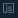

Expression Editor#
The Expression Editor is a feature of the Page editor. You can create script-based expressions in the Expression Editor.
You can initiate the Expression Editor when editing properties of a page element. The icon Set Expression  shows that you can open the dialogue window.
Note
When the icon is blue, then the expression has already been set. However, you can click the icon and edit the existing expression.
In the following image, you can see the Expression Editor.
There are buttons in the header represent functions to ease your work with the expression editor:
- Insert a quick snippet
Allows users to insert a predefined expression. The expression to be pasted depends on the property. You can use this button when editing the following properties.Table 1. Properties that allow inserting a quick snippet Expression Property valueManual
Manual_modeIs_runningValueisVisbleBlinkingchangeValueClickformatValueText - Pick up an alarm
Opens a menu that allows you to pick an alarm from the list. You will have the alarm's relative path inserted to the cursor's position as the result of the operation. - Pick up a tag
Opens a menu that allows you to pick a tag from the list. You will have the tag's relative path inserted to the cursor's position as the result of the operation. When picking tags with Pick up a tag button or via a hotkey combination, you can select several tags, just hold thectrlbutton and choose tags with the mouse. - Pick up a page
Opens a menu that allows you to pick a page from the list. You will have the page's relative path inserted to the cursor's position as the result of the operation.
Important
Use the following hotkeys:
Alt+Shift+Afor alarm pickingAlt+Shift+Tfor tag pickingAlt+Shift+Pfor page pickingctrl+spacecombination opens a list of available options at the cursor position.
The Expression editor has a validation mechanism which prevents its users from incorrect expression writing.
Parent article:
- Page editor
This article shortly tells about pages, page editor, and its interface.